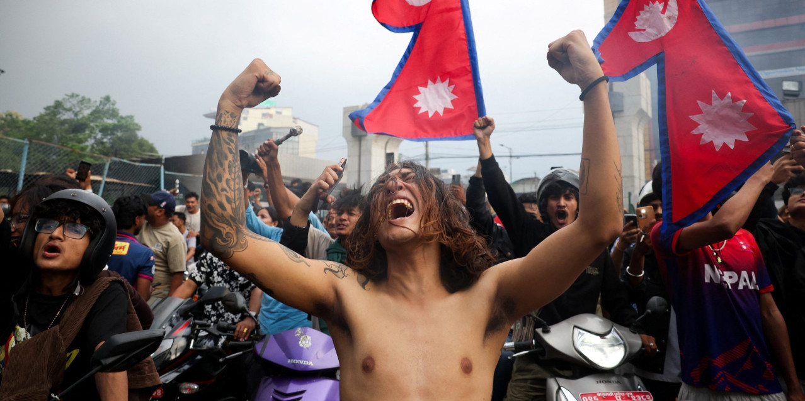
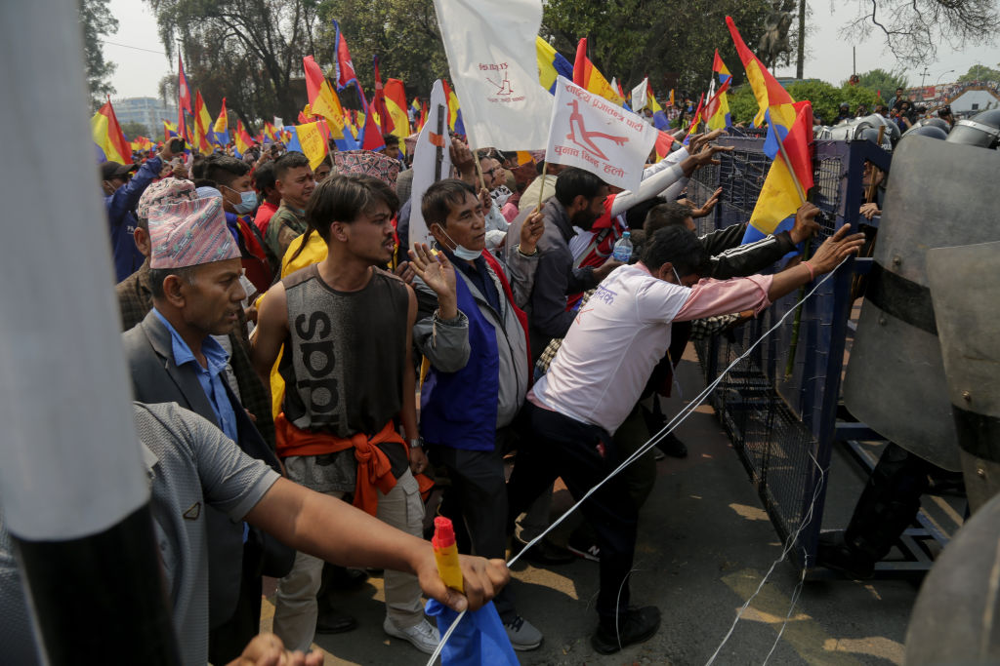
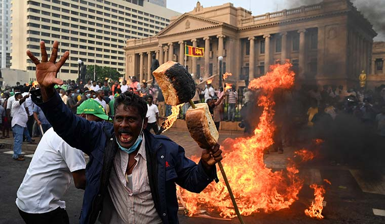
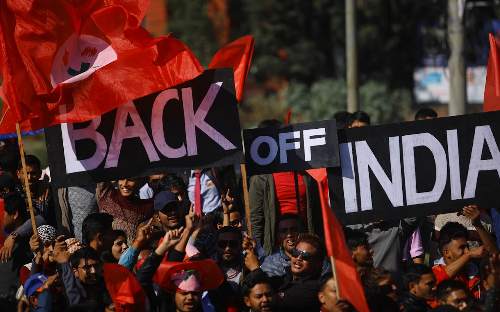
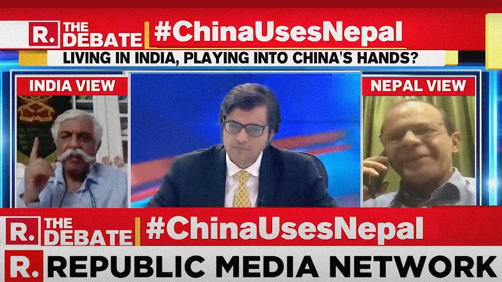
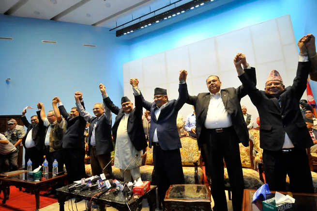
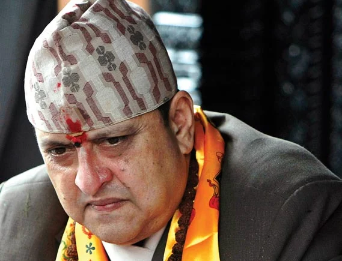
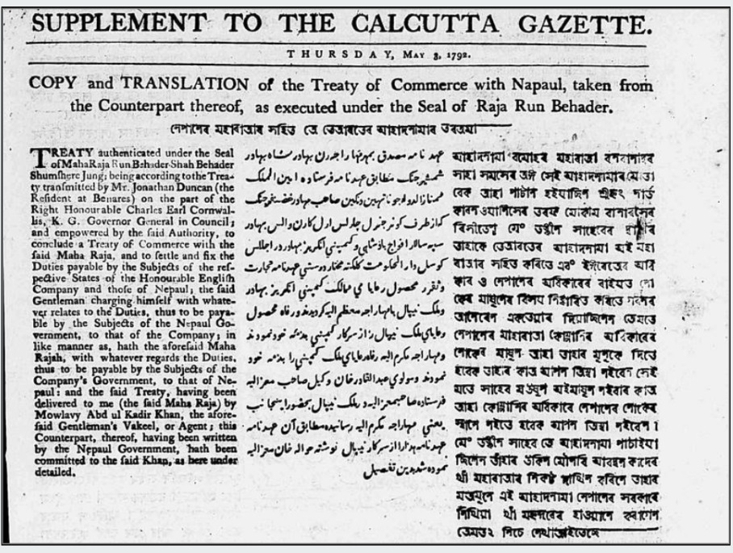
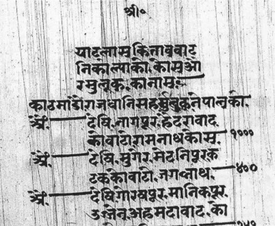

Journalism
- Himalayan Uprising PDF
- Who are Nepal's Gen Z? PDF
- Nepal's Hindutva moment? PDF
- Why is Sri Lanka burning?in Nepali PDF
- The Millennium Challenge Corporation (MCC) in the Sri Lankan Experiencein Nepali PDF
- Trickle-down Effect: Nepal–India tensions have advanced from the diplomatic level to the public sphere PDF
- Watching Indian primetime TV news from Kathmandu PDF
- In Colombo: On the 2019 Easter bombings in Sri Lanka PDF
- What a Leftist Alliance Victory in Landmark Elections Means for Nepal PDF
- Hammer and Fickle: Nepali politics sees a major reconfiguration in time for a watershed election PDF
- The Next Nepali Revolution PDF
- Accord and Discord: What stands behind the calls for a 'national unity' government in Nepal PDF
- Kingdom Come: Nepal's Hindu right loses steam PDF
Academic Writing
- Treaty-mindedness in the 19th-century Gorkhali officialdom PDF
- Espionage in 19th-century South Asiain Nepali PDF
- Review of Homicide Law in 19th Century Nepal: A Study of the Muluki Ains and Legal Documents by Rajan Khatiwoda PDF
- A 19th-century royal scrapbook: Military, scientific and geographical miscellany in Nepal’s archives PDF
- A Transnational History of Caste: Nepali Caste Laws in British India, 1900–1939 PDF